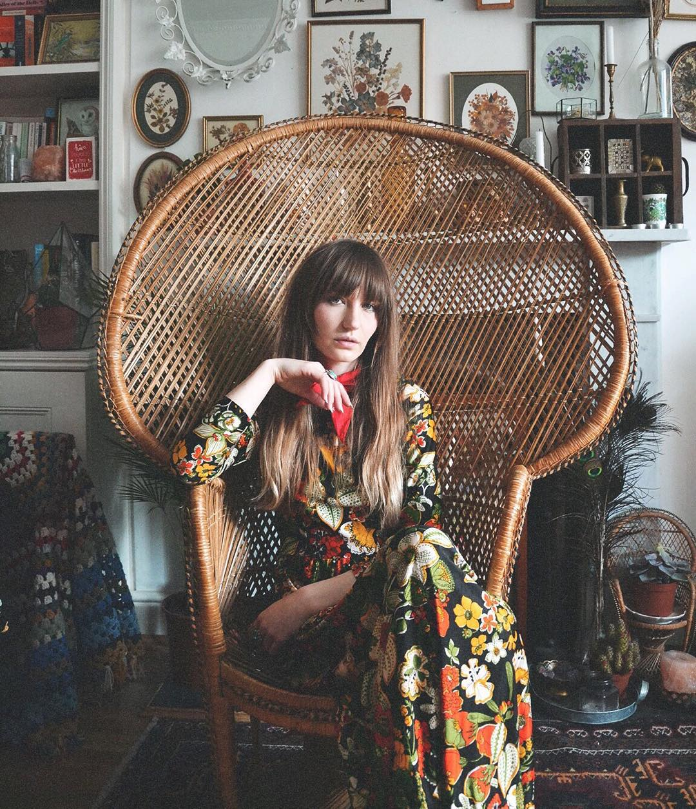
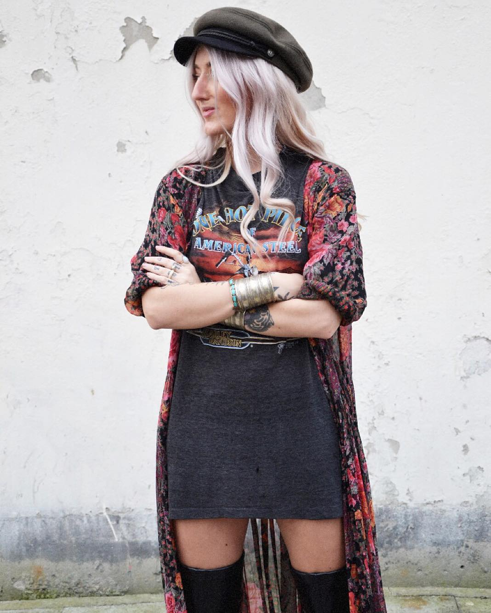
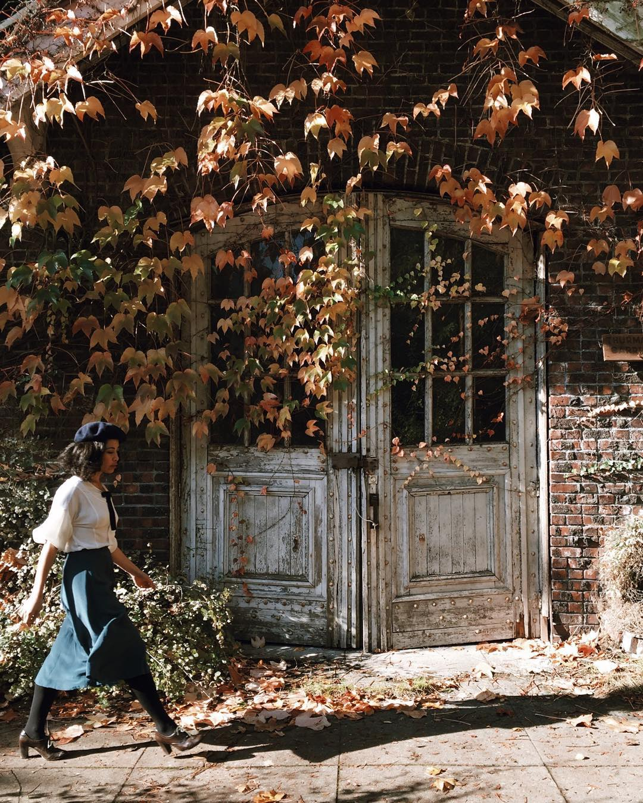
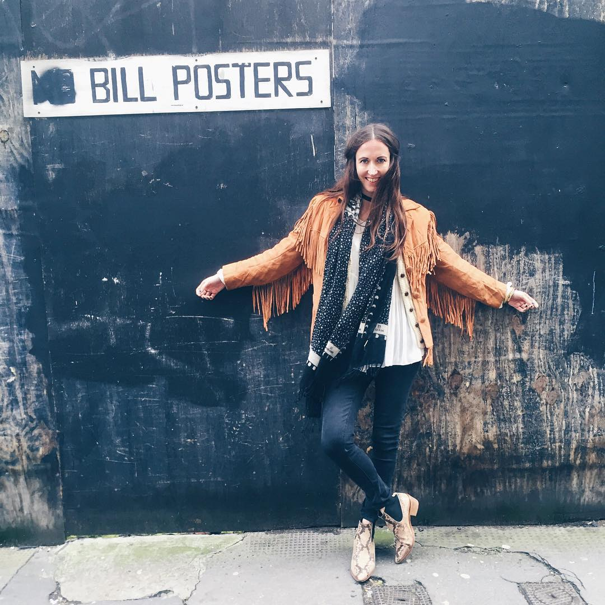

A great wardrobe isn’t built in a season - a few timeless pieces that have lasted the distance through many a sartorial phase are the cornerstone of every well-dressed woman’s closet. But knowing where to find that elusive classic piece, and more importantly, how to style it, is an art. Carrying off a retro look head-to-toe - even more so.
Luckily, our Instagram feeds have us covered. Here’s 5 style stars who’ll give you endless inspiration for how to style retro wares.
Sara Waiste of Waiste Vintage
A vintage curator and ASOS insider, Sara’s Instagram feed is chockfull of dreamy, ethereal outfits inspired by the 60s and 70s. If you love the bohemian look, you’ll fall head over heels for her collection of breezy, flower power blouses and dresses. Her mostly sepia-toned snaps are also great for a dose of interiors inspiration. Follow her @Sara_Waiste
Eliza Rose Mooree
Blogger Eliza mixes and matches statement 70s pieces with 80s-inspired accessories. Think slogan band tees, fringed jackets and embroidered tunics, heavy-duty silver jewellery and leather over the knee boots. Her feed is a great lesson in how to mix in vintage with seasonal staple like ripped jeans, especially if you like a rock ’n’ roll vibe to your vintage. Follow her @eliza_moore
Tawny Holt of Armour sans Anguish

Tawny Holt runs Californian clothing company Armour sans Anguish, making hand-crafted pieces from recycled vintage fabrics - from prom dresses to boldly patterned bed sheets. Her Insta is a must-follow to see her latest designs and how she styles them for globe-trotting adventures. Follow her @asa_madeandfound
Rodellee of Adore Vintage
'Prim' has never looked as pretty as on Rodellee's feed. She sells modern and vintage pieces on her online store, Adore Vintage, and is the perfect poster girl for her brand. She combines lace midi skirts paired with silk cami tops, Mary Janes and neat knits to create a vintage aesthetic that’s elegant but also just the right side of sexy.Follow her if you love 30s and 40s style, or if you fell hard for Keira and Sienna’s style in The Edge Of Love. Follow her @adorevintage
Nat Wallers
Ex-fashion editor Natalie Wall has a flair for mixing modern 70s-inspired fashion with vintage. Jazzy blouses, shaggy faux furs and statement boots are her signature, and for a sure-fire route to style envy, just scroll through her feed. Follow her @talliwall